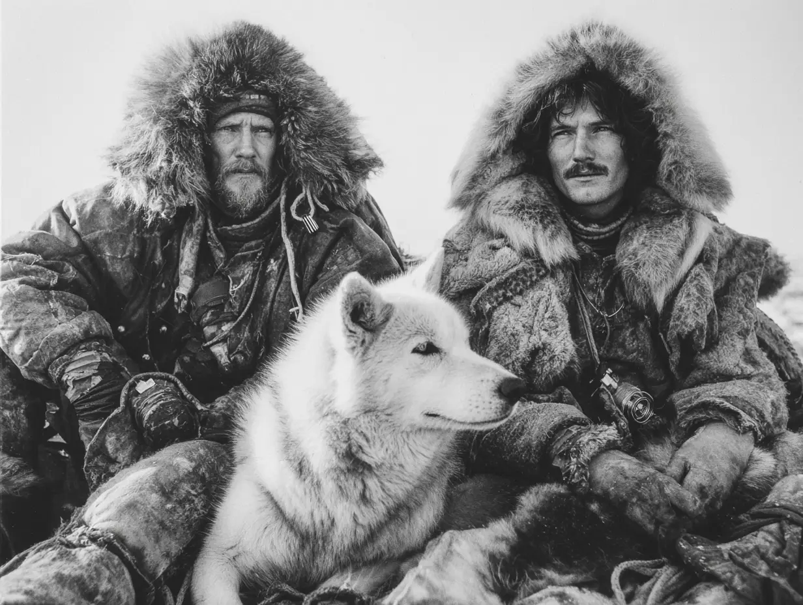
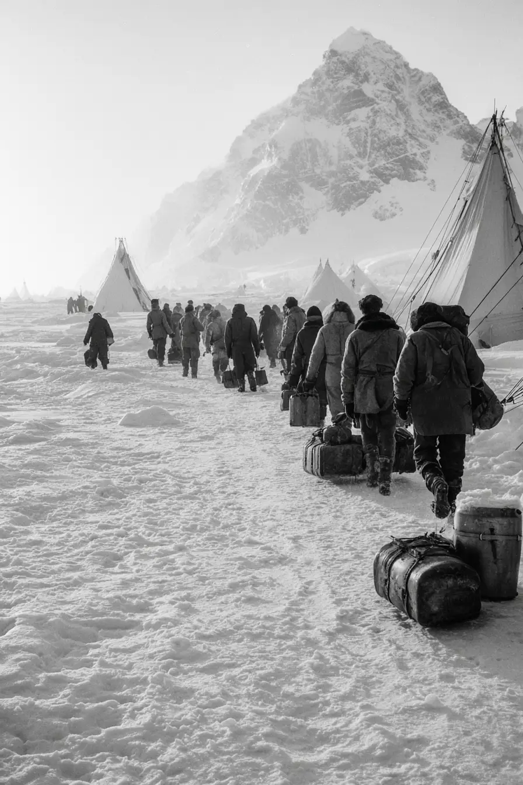
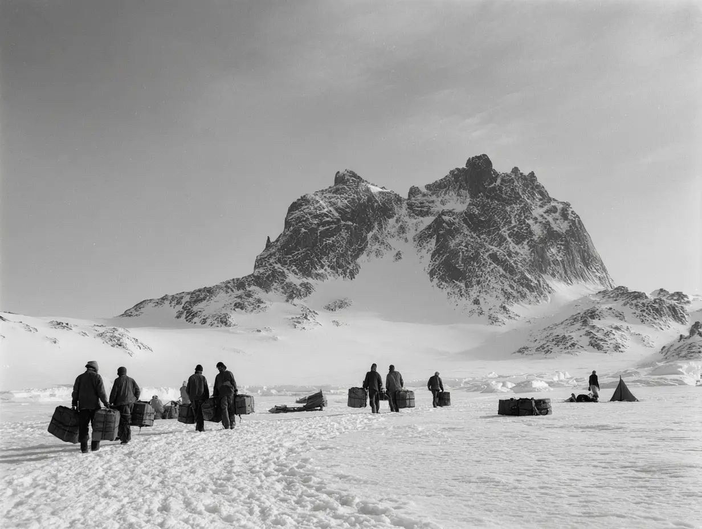
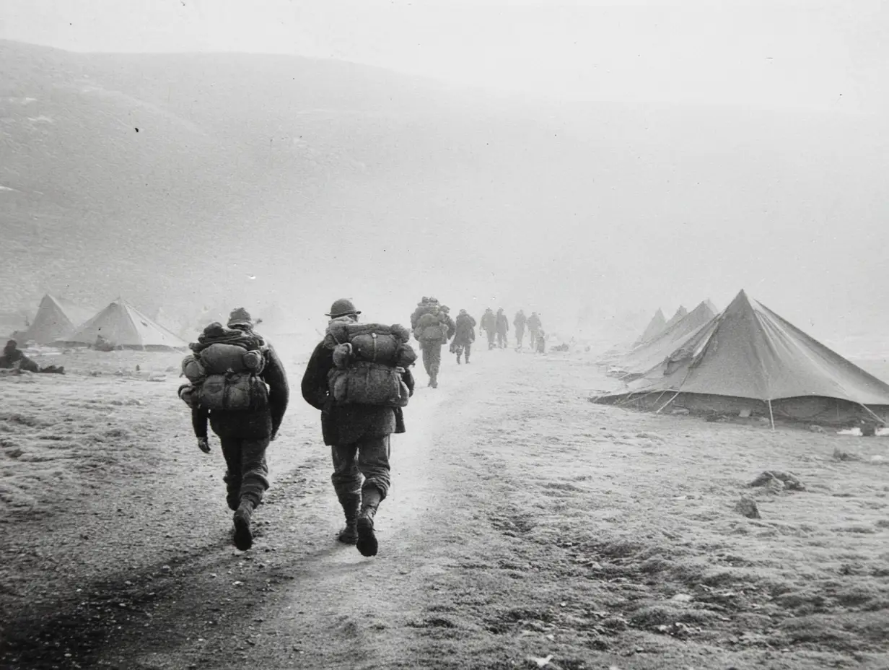
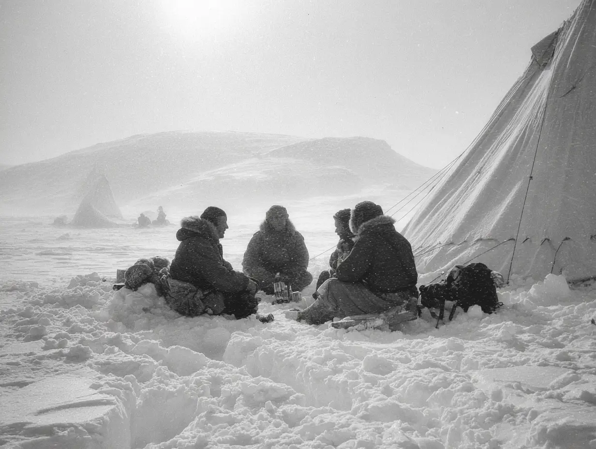
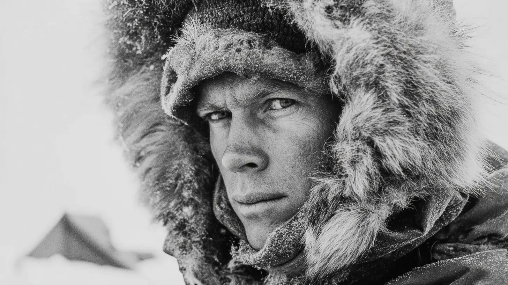
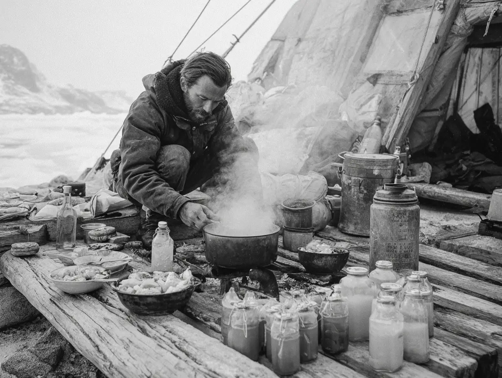
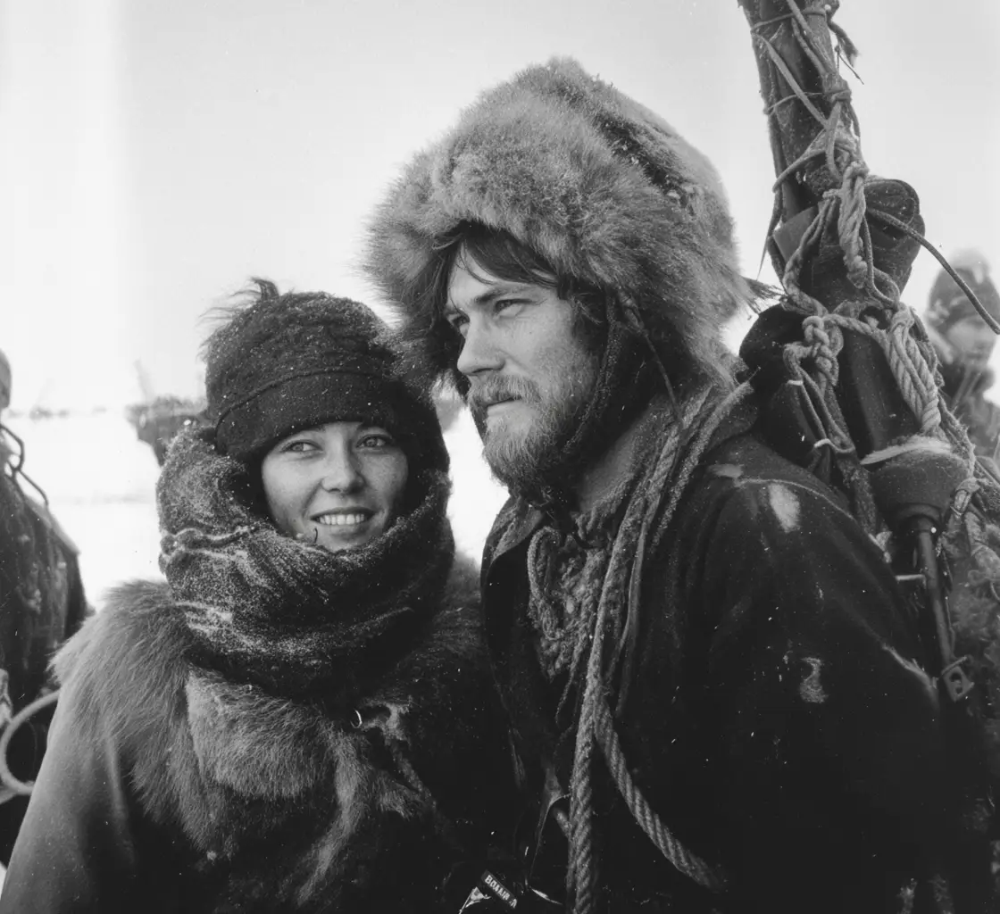

Northern
Expeditions
1970–1978

Morning Ascent

Camp at Dusk

Crossing the Valley

Quiet Plateau

Rest Stop
Dark spruce forest frowned on either side the frozen waterway. The trees had been stripped by a recent wind of their white covering of frost, and they seemed to lean toward each other, black and ominous, in the fading light. A vast silence reigned over the land. The land itself was a desolation, lifeless, without movement, so lonely and cold that the spirit of it was not even that of sadness. There was a hint in it of laughter, but a laughter more terrible than any sadness—a laughter that was mirthless as the smile of the sphinx, a laughter cold as the frost and partaking of the grimness of infallibility. It was the masterful and incommunicable wisdom of eternity laughing at the futility of life and the effort of life. It was the Wild, the savage, frozen-hearted Northland Wild.

Evening Descent

Along the Ridge

Shelter from the Wind
The man strode ahead of the team. He was a young man, tall, strong, with light hair and blue eyes, and his face was expressionless as the land he traversed. He carried his rifle loosely in his hand, as though it were part of his body, and he swung along with the ease of long familiarity. The woman followed the sled. She was young, too, and her face bore the stamp of the Northland—endurance and patience, and a vague hint of suffering. The child, wrapped in furs, slept in the sled, its face peaceful and unconscious of the grim struggle being waged on its behalf.

Last Light